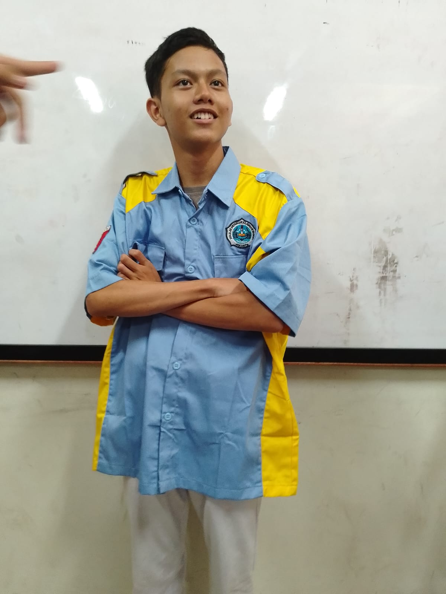
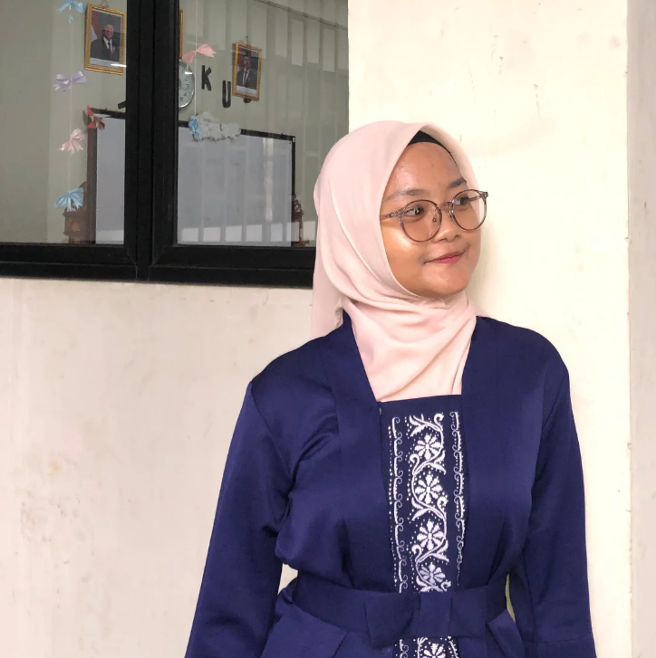
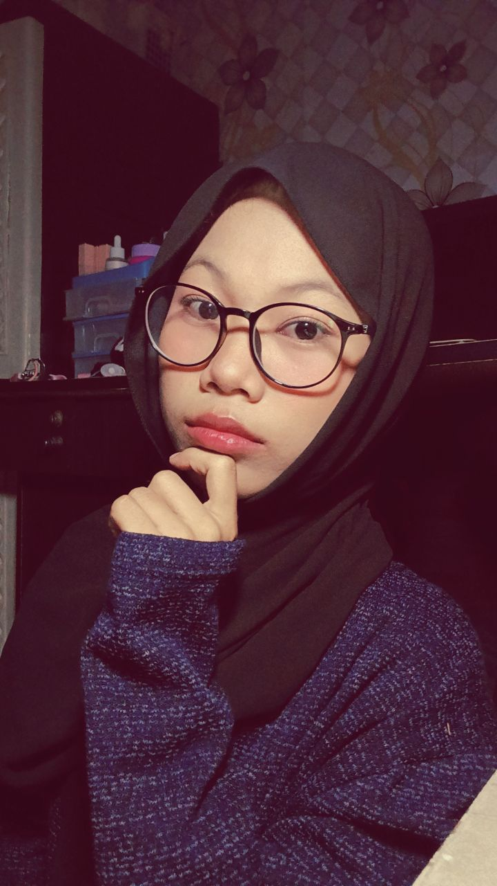

Selamat Datang di Website TKJ
Website ini dibuat untuk memberikan informasi tentang Teknik Komputer dan Jaringan
Tentang Kami
Kami adalah komunitas yang berfokus pada pengembangan keterampilan di bidang Teknik Komputer dan Jaringan. Kami menyediakan berbagai sumber daya, tutorial, dan informasi terkini untuk membantu anggota kami belajar dan berkembang.
Struktur Kelas
Struktur Kelas
-
 wali Kelas: Isya Anshori
wali Kelas: Isya Anshori
-
 Ketua Kelas : Muhammad Rakha.M
-
 Wakil Ketua Kelas: Lintang Aisa Rani
-
 Sekretaris: Silvia Rairanika
- Sekretaris 2: Layla Idzani Zahra
- Bendahara: Dana Raya Pratama
- Bendahara 2: Khansa fairus Izati